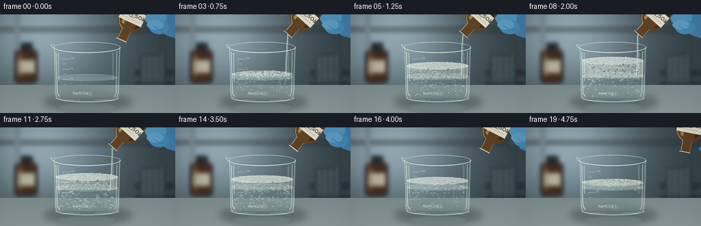
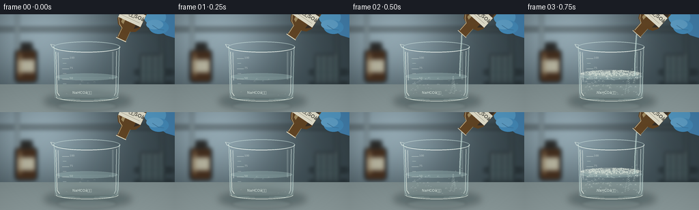
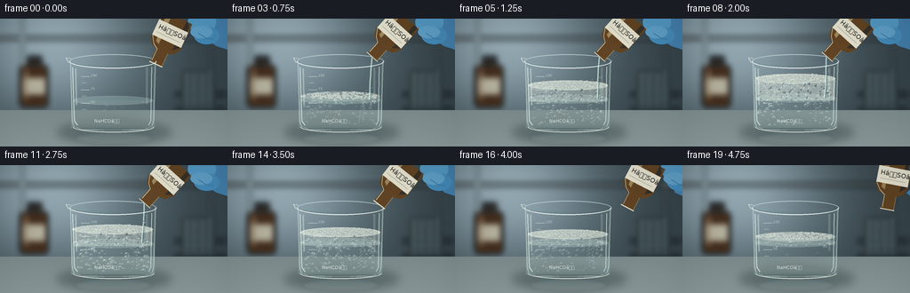
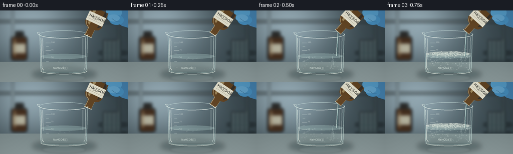

CODING AGENTS AS PIXEL WORLD MODELS
traex/GPT-6.1-Sol · material_0036
点击播放 · 原生 RGB 像素
逐轮保存的候选
回放视频、检查图与代码变化。
每份候选均可单独播放。实际图片检查记录在下方工具轨迹中。
候选 01播放与检查图
点击播放 · 原生 RGB 像素


展开代码变化
--- 上一保存版本
+++ 本次保存版本
@@ -0,0 +1,227 @@
+from pathlib import Path
+import math
+import numpy as np
+from PIL import Image, ImageDraw, ImageFilter, ImageFont
+import artifact_io
+
+ROOT=Path(__file__).resolve().parent
+W,H,S=256,144,4
+rng=np.random.default_rng(18)
+
+def canvas(): return Image.new('RGBA',(W*S,H*S),(0,0,0,0))
+def box(b): return tuple(int(round(v*S)) for v in b)
+def ellipse(im,b,c,outline=None,width=1):
+ ImageDraw.Draw(im).ellipse(box(b),fill=c,outline=outline,width=max(1,int(width*S)))
+def line(im,pts,c,w=1): ImageDraw.Draw(im).line([(int(x*S),int(y*S)) for x,y in pts],fill=c,width=max(1,int(w*S)),joint='curve')
+def poly(im,pts,c): ImageDraw.Draw(im).polygon([(round(x*S),round(y*S)) for x,y in pts],fill=c)
+def font(size):
+ return ImageFont.truetype('/usr/share/fonts/truetype/dejavu/DejaVuSans.ttf',round(size*S))
+def text(im,xy,st,size,c): ImageDraw.Draw(im).text((int(xy[0]*S),int(xy[1]*S)),st,font=font(size),fill=c)
+def over(im,layer): return Image.alpha_composite(im,layer)
+
+yy,xx=np.mgrid[0:H*S,0:W*S].astype(float); x=xx/S; y=yy/S
+# Defocused, naturally lit laboratory.
+base=np.zeros((H*S,W*S,3),float)
+light=np.exp(-((x-57)/105)**2-((y-25)/90)**2)
+for k,(a,b) in enumerate([(52,99),(66,107),(72,111)]): base[:,:,k]=a+b*light
+base+=rng.normal(0,.48,base.shape)
+bg=Image.fromarray(np.uint8(np.clip(base,0,255))).convert('RGBA')
+obj=canvas()
+# vertical glass shelves and background reagent jars, well behind focal plane
+poly(obj,[(0,20),(256,20),(256,24),(0,24)],(102,117,117,200))
+line(obj,[(25,0),(25,96)],(164,181,179,110),3)
+line(obj,[(237,0),(237,93)],(152,164,161,110),3)
+ImageDraw.Draw(obj).rounded_rectangle(box((22,52,54,100)),radius=5*S,fill=(68,46,30,255))
+ImageDraw.Draw(obj).rectangle(box((30,42,47,54)),fill=(42,42,40,255))
+ImageDraw.Draw(obj).rectangle(box((26,67,51,85)),fill=(192,186,161,220))
+line(obj,[(29,58),(29,91)],(177,127,64,110),2)
+for j in range(4):
+ bx=207+j*9
+ ImageDraw.Draw(obj).rounded_rectangle(box((bx,61,bx+5,100)),radius=2*S,fill=(131,161,163,155))
+ ellipse(obj,(bx,59,bx+5,62),(195,207,202,180))
+line(obj,[(198,85),(253,85)],(53,71,76,255),4)
+line(obj,[(198,103),(253,103)],(50,69,76,255),4)
+bg=over(bg,obj.filter(ImageFilter.GaussianBlur(3.2*S)))
+# smooth steel bench, softly reflecting the beaker
+bench=canvas()
+poly(bench,[(0,103),(256,103),(256,144),(0,144)],(124,139,140,255))
+bencharr=np.asarray(bench).copy()
+for k in range(3):
+ bencharr[:,:,k]=np.clip(bencharr[:,:,k].astype(float)+(y-103)*.40+4*np.cos(x/40),0,255)
+bench=Image.fromarray(bencharr)
+bg=over(bg,bench)
+shadow=canvas(); ellipse(shadow,(64,116,193,140),(24,45,48,90)); bg=over(bg,shadow.filter(ImageFilter.GaussianBlur(5*S)))
+reflection=canvas(); ellipse(reflection,(84,128,171,142),(207,225,222,29)); line(reflection,[(82,133),(169,133)],(222,238,229,35),1)
+bg=over(bg,reflection.filter(ImageFilter.GaussianBlur(2*S)))
+
+# Stable populations have continuous rising trajectories rather than flickering particles.
+bubbles=[]
+for j in range(170):
+ bubbles.append((rng.uniform(86,167),rng.uniform(0,1),rng.uniform(0.5,2.5),rng.uniform(0.60,1.4),rng.uniform(0,2*math.pi)))
+foam_seeds=[(rng.uniform(-1,1),rng.uniform(-1,1),rng.uniform(.7,2.3),rng.uniform(0,6.28)) for _ in range(310)]
+
+
+def bubble(im,bx,by,r,alpha=130):
+ # Transparent gas sphere: softly shaded lower edge and reflected softbox crescent.
+ ellipse(im,(bx-r,by-r,bx+r,by+r),(212,229,225,int(alpha*.16)),(221,237,231,alpha),.30)
+ d=ImageDraw.Draw(im)
+ d.arc(box((bx-r,by-r,bx+r,by+r)),35,147,fill=(67,103,103,int(alpha*.72)),width=max(1,int(.30*S)))
+ d.arc(box((bx-r*.77,by-r*.78,bx+r*.77,by+r*.78)),192,276,fill=(252,255,247,min(255,int(alpha*1.35))),width=max(1,int(.35*S)))
+ if r>1.4: ellipse(im,(bx-r*.43,by-r*.56,bx-r*.05,by-r*.19),(255,255,249,min(alpha+25,240)))
+
+
+def bottle(im,t):
+ # Reagent bottle moves into position, pours, then is withdrawn.
+ if t<.10: tilt=25+17*t/.1; shift=0
+ elif t<.70: tilt=42; shift=0
+ else: tilt=42-(t-.70)/.30*31; shift=(t-.70)/.30*43
+ cx,cy=199+shift,-9-shift*.12
+ angle=math.radians(tilt)
+ def p(a,b): return (cx+a*math.cos(angle)-b*math.sin(angle),cy+a*math.sin(angle)+b*math.cos(angle))
+ glove=canvas()
+ # A cropped nitrile-gloved hand behind the bottle.
+ poly(glove,[(217+shift,-5),(256,-5),(256,35),(243+shift*.2,31),(224+shift,17)],(67,128,173,255))
+ ellipse(glove,(211+shift,-9,243+shift,17),(83,153,196,255))
+ ellipse(glove,(218+shift,9,247+shift,29),(69,140,187,255))
+ ellipse(glove,(214+shift,8,239+shift,22),(96,161,201,255))
+ line(glove,[(223+shift,16),(232+shift,22),(240+shift,23)],(42,105,153,150),.7)
+ im=over(im,glove.filter(ImageFilter.GaussianBlur(.22*S)))
+ glass=canvas()
+ pts=[(-18,-7),(18,-7),(18,25),(14,32),(7,35),(7,51),(-7,51),(-7,35),(-14,32),(-18,25)]
+ poly(glass,[p(a,b) for a,b in pts],(100,67,31,235))
+ # Warm translucent amber glass with long reflected highlights.
+ poly(glass,[p(a,b) for a,b in [(-13,-7),(-7,-7),(-7,29),(-11,27)]],(233,181,97,140))
+ poly(glass,[p(a,b) for a,b in [(11,-7),(16,-7),(16,24),(10,29)]],(54,39,25,190))
+ line(glass,[p(-17,-7),p(-17,23),p(-12,31),p(-6,35),p(-6,49)],(255,228,172,175),.8)
+ line(glass,[p(7,35),p(7,50)],(209,186,133,170),.7)
+ line(glass,[p(-8,51),p(8,51)],(230,222,194,255),1.4)
+ # Label attached to the glass, not a caption.
+ lab=Image.new('RGBA',(36*S,19*S),(229,226,207,255))
+ d=ImageDraw.Draw(lab)
+ d.text((3*S,3*S),'HâSOâ',font=font(7.3),fill=(45,46,41,255))
+ d.line((3*S,14*S,32*S,14*S),fill=(104,99,82,255),width=1)
+ lab=lab.rotate(-tilt,Image.Resampling.BICUBIC,expand=True)
+ q=p(0,13)
+ glass.alpha_composite(lab,(round(q[0]*S-lab.width/2),round(q[1]*S-lab.height/2)))
+ im=over(im,glass)
+ return im,p(0,52)
+
+
+def frame(i):
+ t=i/19
+ # Timelapse envelope: almost immediate nucleation; vigorous foam; slower collapse.
+ activity=max(0,math.sin(math.pi*min(1,max(0,(t-.07)/.91))))**.75
+ if t<.09: activity=0
+ foam_amt=0 if t<.12 else (min(1,(t-.12)/.20) if t<.43 else math.exp(-(t-.43)*2.0))
+ liquid_y=92-5*min(1,t/.72)
+ foam_top=liquid_y-22*foam_amt
+ im=bg.copy()
+ # Refraction through the cylindrical sidewall, using the actual background pixels.
+ a=np.asarray(im).copy(); source=a.copy()
+ norm=(x-127)/47
+ inside=(x>=80)&(x<=174)&(y>=49)&(y<=123)
+ edge=np.sqrt(np.maximum(0,1-np.clip(norm,-1,1)**2))
+ sx=np.clip((xx+(norm*(1-edge)*4*S)).astype(int),0,W*S-1)
+ optical=source[np.arange(H*S)[:,None],sx,:3].astype(float)
+ glass_tint=np.array([150,181,183])
+ amount=.025+.09*(1-edge)
+ optical=optical*(1-amount[:,:,None])+glass_tint*amount[:,:,None]
+ # Subtle contrast lost through the liquid and brighter bottom caustic.
+ wet=(y>=liquid_y)&inside
+ cloud=activity*.13
+ water=optical*(.90-cloud)+np.array([166,195,192])*(.10+cloud)
+ optical[wet]=water[wet]
+ caustic=10*np.exp(-((y-119)/3.5)**2)*np.exp(-((x-123)/35)**2)
+ optical+=caustic[:,:,None]
+ a[:,:,:3][inside]=np.clip(optical[inside],0,255)
+ im=Image.fromarray(a)
+ rear=canvas()
+ # Back rim and meniscus are seen through the glass.
+ ImageDraw.Draw(rear).arc(box((78,40,176,56)),180,360,fill=(207,229,225,160),width=1*S)
+ line(rear,[(80,48),(82,118)],(170,203,204,100),.8)
+ line(rear,[(174,48),(172,118)],(164,195,196,100),.8)
+ ellipse(rear,(82,liquid_y-5,172,liquid_y+5),(169,199,196,85),(201,225,218,125),.45)
+ im=over(im,rear)
+ gas=canvas()
+ # Dissolved reaction volume: many small CO2 bubbles rising from the mixing point.
+ count=int(12+activity*150)
+ for j,(bx,phase,r,speed,ang) in enumerate(bubbles[:count]):
+ progress=(phase+t*speed*2.1)%1
+ by=120-progress*(120-foam_top)
+ bx=bx+math.sin(t*11+ang)*1.1
+ if by<foam_top+2: continue
+ strength=40+activity*120
+ bubble(gas,bx,by,r*(.65+.55*progress)*(0.7+activity*.3),int(strength))
+ if activity>.15:
+ for j in range(42):
+ p=(j*.618+t*3.2)%1
+ bx=152+math.sin(j*2.5+t*3)*5*(1-p)
+ by=117-p*(117-foam_top)
+ bubble(gas,bx,by,.35+(j%4)*.15,120)
+ im=over(im,gas)
+ froth=canvas()
+ if foam_amt>.01:
+ # Foam has a curved volume as well as a textured top surface.
+ front=liquid_y+3
+ poly(froth,[(82,foam_top+1),(87,foam_top-2),(165,foam_top-2),(172,foam_top+2),(171,front),(83,front)],(221,230,218,int(125*foam_amt)))
+ ellipse(froth,(82,foam_top-5,172,foam_top+6),(223,232,220,int(205*min(1,foam_amt*2))))
+ for j,(u,v,r,ph) in enumerate(foam_seeds):
+ if u*u+v*v>1: continue
+ bx=127+u*44 + math.sin(t*9+ph)*.6
+ by=foam_top+v*4+math.sin(t*13+ph)*.45
+ rr=r*(.6+.4*foam_amt)
+ # Surface froth glints, white cells and darker interstices.
+ ellipse(froth,(bx-rr,by-rr*.68,bx+rr,by+rr*.68),(234,240,227,190),(174,195,188,150),.22)
+ line(froth,[(bx-rr*.5,by-rr*.4),(bx+rr*.16,by-rr*.52)],(255,255,247,225),.27)
+ for j in range(int(80*foam_amt)):
+ u,v,r,ph=foam_seeds[j]
+ bx=127+u*43
+ by=foam_top+5+((v+1)/2)*(front-foam_top-3)
+ bubble(froth,bx,by,r*.74,160)
+ im=over(im,froth)
+ im,tip=bottle(im,t)
+ # Continuous clear addition, refracting the bright overhead panel.
+ if .08<t<.70:
+ jet=canvas()
+ endx=tip[0]-2.4
+ topx,topy=tip
+ pts=[]
+ for k in range(18):
+ f=k/17
+ pts.append((topx-2.4*f+math.sin(f*5+t*11)*.35,topy+(max(foam_top,liquid_y)-topy)*f))
+ line(jet,pts,(177,208,203,140),2.3)
+ line(jet,[(px-.5,py) for px,py in pts],(244,255,245,205),.65)
+ for j in range(4):
+ f=(t*6+j*.25)%1
+ bx=endx+math.sin(j*4+t*5)*(3+4*f)
+ by=foam_top-2-math.sin(f*math.pi)*7
+ bubble(jet,bx,by,.5,140)
+ im=over(im,jet)
+ # Foreground glass reflections and graduations stay sharp and stable.
+ front=canvas()
+ line(front,[(79,48),(81,115),(83,121),(92,125),(162,125),(171,121),(173,114),(175,48)],(217,237,229,160),.85)
+ line(front,[(81.5,55),(83.5,115),(87,120)],(246,253,242,180),1.0)
+ line(front,[(170.7,54),(169.5,115),(167,120)],(236,250,243,150),1.0)
+ line(front,[(85,56),(86,97)],(248,255,248,85),1.8)
+ line(front,[(165,55),(165,96)],(241,255,249,40),2.7)
+ ImageDraw.Draw(front).arc(box((78,40,176,56)),0,180,fill=(246,252,244,230),width=round(1.05*S))
+ ImageDraw.Draw(front).arc(box((80,42,174,54)),0,180,fill=(70,112,114,130),width=round(.55*S))
+ # Small pouring spout on the left lip.
+ line(front,[(80,45),(74,44),(77,49),(84,51)],(226,240,232,195),.8)
+ ImageDraw.Draw(front).arc(box((82,116,173,128)),0,180,fill=(242,251,239,205),width=1*S)
+ ImageDraw.Draw(front).arc(box((84,117,171,125)),0,180,fill=(100,141,143,130),width=round(.6*S))
+ for val,gy in [(100,65),(75,80),(50,95)]:
+ line(front,[(91,gy),(101,gy)],(237,247,237,170),.6)
+ text(front,(102,gy-3.2),str(val),3.8,(242,249,240,155))
+ line(front,[(92,gy+7),(97,gy+7)],(234,246,236,130),.5)
+ text(front,(106,112),'NaHCOâ',5.3,(235,246,237,205))
+ im=over(im,front)
+ # Lens vignette and a fine, static photographic texture.
+ arr=np.asarray(im.convert('RGB')).astype(float)
+ vignette=1-.105*(((x-128)/155)**2+((y-76)/117)**2)
+ arr*=vignette[:,:,None]
+ out=Image.fromarray(np.uint8(np.clip(arr,0,255))).resize((W,H),Image.Resampling.LANCZOS)
+ return np.asarray(out)
+
+frames=np.stack([frame(i) for i in range(20)])
+artifact_io.save(frames,ROOT)
候选 02播放与检查图
点击播放 · 原生 RGB 像素


展开代码变化
--- 上一保存版本
+++ 本次保存版本
@@ -75,7 +75,7 @@
if t<.10: tilt=25+17*t/.1; shift=0
elif t<.70: tilt=42; shift=0
else: tilt=42-(t-.70)/.30*31; shift=(t-.70)/.30*43
- cx,cy=199+shift,-9-shift*.12
+ cx,cy=197+shift,5-shift*.12
angle=math.radians(tilt)
def p(a,b): return (cx+a*math.cos(angle)-b*math.sin(angle),cy+a*math.sin(angle)+b*math.cos(angle))
glove=canvas()
@@ -189,7 +189,8 @@
for k in range(18):
f=k/17
pts.append((topx-2.4*f+math.sin(f*5+t*11)*.35,topy+(max(foam_top,liquid_y)-topy)*f))
- line(jet,pts,(177,208,203,140),2.3)
+ line(jet,[(px+.65,py) for px,py in pts],(61,99,103,155),2.3)
+ line(jet,pts,(184,217,211,200),1.65)
line(jet,[(px-.5,py) for px,py in pts],(244,255,245,205),.65)
for j in range(4):
f=(t*6+j*.25)%1
可观测工具轨迹
实际执行的命令与返回图片。
命令 1exit 0
/bin/bash -lc "ls -la && cat prompt.txt && printf '\\n---RULES---\\n' && cat GENERATION_RULES.md && printf '\\n---SPEC---\\n' && cat task_spec.json"
命令 2exit 0
/bin/bash -lc 'cat artifact_io.py'
命令 3exit 0
/bin/bash -lc "cat > generate.py <<'PY'
from pathlib import Path
import math
import numpy as np
from PIL import Image, ImageDraw, ImageFilter, ImageFont
import artifact_io
ROOT=Path(__file__).resolve().parent
W,H,S=256,144,4
rng=np.random.default_rng(18)
def canvas(): return Image.new('RGBA',(W*S,H*S),(0,0,0,0))
def box(b): return tuple(int(round(v*S)) for v in b)
def ellipse(im,b,c,outline=None,width=1):
ImageDraw.Draw(im).ellipse(box(b),fill=c,outline=outline,width=max(1,int(width*S)))
def line(im,pts,c,w=1): ImageDraw.Draw(im).line([(int(x*S),int(y*S)) for x,y in pts],fill=c,width=max(1,int(w*S)),joint='curve')
def poly(im,pts,c): ImageDraw.Draw(im).polygon([(round(x*S),round(y*S)) for x,y in pts],fill=c)
def font(size):
return ImageFont.truetype('/usr/share/fonts/truetype/dejavu/DejaVuSans.ttf',round(size*S))
def text(im,xy,st,size,c): ImageDraw.Draw(im).text((int(xy[0]*S),int(xy[1]*S)),st,font=font(size),fill=c)
def over(im,layer): return Image.alpha_composite(im,layer)
yy,xx=np.mgrid[0:H*S,0:W*S].astype(float); x=xx/S; y=yy/S
# Defocused, naturally lit laboratory.
base=np.zeros((H*S,W*S,3),float)
light=np.exp(-((x-57)/105)**2-((y-25)/90)**2)
for k,(a,b) in enumerate([(52,99),(66,107),(72,111)]): base[:,:,k]=a+b*light
base+=rng.normal(0,.48,base.shape)
bg=Image.fromarray(np.uint8(np.clip(base,0,255))).convert('RGBA')
obj=canvas()
# vertical glass shelves and background reagent jars, well behind focal plane
poly(obj,[(0,20),(256,20),(256,24),(0,24)],(102,117,117,200))
line(obj,[(25,0),(25,96)],(164,181,179,110),3)
line(obj,[(237,0),(237,93)],(152,164,161,110),3)
ImageDraw.Draw(obj).rounded_rectangle(box((22,52,54,100)),radius=5*S,fill=(68,46,30,255))
ImageDraw.Draw(obj).rectangle(box((30,42,47,54)),fill=(42,42,40,255))
ImageDraw.Draw(obj).rectangle(box((26,67,51,85)),fill=(192,186,161,220))
line(obj,[(29,58),(29,91)],(177,127,64,110),2)
for j in range(4):
bx=207+j*9
ImageDraw.Draw(obj).rounded_rectangle(box((bx,61,bx+5,100)),radius=2*S,fill=(131,161,163,155))
ellipse(obj,(bx,59,bx+5,62),(195,207,202,180))
line(obj,[(198,85),(253,85)],(53,71,76,255),4)
line(obj,[(198,103),(253,103)],(50,69,76,255),4)
bg=over(bg,obj.filter(ImageFilter.GaussianBlur(3.2*S)))
# smooth steel bench, softly reflecting the beaker
bench=canvas()
poly(bench,[(0,103),(256,103),(256,144),(0,144)],(124,139,140,255))
bencharr=np.asarray(bench).copy()
for k in range(3):
bencharr[:,:,k]=np.clip(bencharr[:,:,k].astype(float)+(y-103)*.40+4*np.cos(x/40),0,255)
bench=Image.fromarray(bencharr)
bg=over(bg,bench)
shadow=canvas(); ellipse(shadow,(64,116,193,140),(24,45,48,90)); bg=over(bg,shadow.filter(ImageFilter.GaussianBlur(5*S)))
reflection=canvas(); ellipse(reflection,(84,128,171,142),(207,225,222,29)); line(reflection,[(82,133),(169,133)],(222,238,229,35),1)
bg=over(bg,reflection.filter(ImageFilter.GaussianBlur(2*S)))
# Stable populations have continuous rising trajectories rather than flickering particles.
bubbles=[]
for j in range(170):
bubbles.append((rng.uniform(86,167),rng.uniform(0,1),rng.uniform(0.5,2.5),rng.uniform(0.60,1.4),rng.uniform(0,2*math.pi)))
foam_seeds=[(rng.uniform(-1,1),rng.uniform(-1,1),rng.uniform(.7,2.3),rng.uniform(0,6.28)) for _ in range(310)]
def bubble(im,bx,by,r,alpha=130):
# Transparent gas sphere: softly shaded lower edge and reflected softbox crescent.
ellipse(im,(bx-r,by-r,bx+r,by+r),(212,229,225,int(alpha*.16)),(221,237,231,alpha),.30)
d=ImageDraw.Draw(im)
d.arc(box((bx-r,by-r,bx+r,by+r)),35,147,fill=(67,103,103,int(alpha*.72)),width=max(1,int(.30*S)))
d.arc(box((bx-r*.77,by-r*.78,bx+r*.77,by+r*.78)),192,276,fill=(252,255,247,min(255,int(alpha*1.35))),width=max(1,int(.35*S)))
if r>1.4: ellipse(im,(bx-r*.43,by-r*.56,bx-r*.05,by-r*.19),(255,255,249,min(alpha+25,240)))
def bottle(im,t):
# Reagent bottle moves into position, pours, then is withdrawn.
if t<.10: tilt=25+17*t/.1; shift=0
elif t<.70: tilt=42; shift=0
else: tilt=42-(t-.70)/.30*31; shift=(t-.70)/.30*43
cx,cy=199+shift,-9-shift*.12
angle=math.radians(tilt)
def p(a,b): return (cx+a*math.cos(angle)-b*math.sin(angle),cy+a*math.sin(angle)+b*math.cos(angle))
glove=canvas()
# A cropped nitrile-gloved hand behind the bottle.
poly(glove,[(217+shift,-5),(256,-5),(256,35),(243+shift*.2,31),(224+shift,17)],(67,128,173,255))
ellipse(glove,(211+shift,-9,243+shift,17),(83,153,196,255))
ellipse(glove,(218+shift,9,247+shift,29),(69,140,187,255))
ellipse(glove,(214+shift,8,239+shift,22),(96,161,201,255))
line(glove,[(223+shift,16),(232+shift,22),(240+shift,23)],(42,105,153,150),.7)
im=over(im,glove.filter(ImageFilter.GaussianBlur(.22*S)))
glass=canvas()
pts=[(-18,-7),(18,-7),(18,25),(14,32),(7,35),(7,51),(-7,51),(-7,35),(-14,32),(-18,25)]
poly(glass,[p(a,b) for a,b in pts],(100,67,31,235))
# Warm translucent amber glass with long reflected highlights.
poly(glass,[p(a,b) for a,b in [(-13,-7),(-7,-7),(-7,29),(-11,27)]],(233,181,97,140))
poly(glass,[p(a,b) for a,b in [(11,-7),(16,-7),(16,24),(10,29)]],(54,39,25,190))
line(glass,[p(-17,-7),p(-17,23),p(-12,31),p(-6,35),p(-6,49)],(255,228,172,175),.8)
line(glass,[p(7,35),p(7,50)],(209,186,133,170),.7)
line(glass,[p(-8,51),p(8,51)],(230,222,194,255),1.4)
# Label attached to the glass, not a caption.
lab=Image.new('RGBA',(36*S,19*S),(229,226,207,255))
d=ImageDraw.Draw(lab)
d.text((3*S,3*S),'HâSOâ',font=font(7.3),fill=(45,46,41,255))
d.line((3*S,14*S,32*S,14*S),fill=(104,99,82,255),width=1)
lab=lab.rotate(-tilt,Image.Resampling.BICUBIC,expand=True)
q=p(0,13)
glass.alpha_composite(lab,(round(q[0]*S-lab.width/2),round(q[1]*S-lab.height/2)))
im=over(im,glass)
return im,p(0,52)
def frame(i):
t=i/19
# Timelapse envelope: almost immediate nucleation; vigorous foam; slower collapse.
activity=max(0,math.sin(math.pi*min(1,max(0,(t-.07)/.91))))**.75
if t<.09: activity=0
foam_amt=0 if t<.12 else (min(1,(t-.12)/.20) if t<.43 else math.exp(-(t-.43)*2.0))
liquid_y=92-5*min(1,t/.72)
foam_top=liquid_y-22*foam_amt
im=bg.copy()
# Refraction through the cylindrical sidewall, using the actual background pixels.
a=np.asarray(im).copy(); source=a.copy()
norm=(x-127)/47
inside=(x>=80)&(x<=174)&(y>=49)&(y<=123)
edge=np.sqrt(np.maximum(0,1-np.clip(norm,-1,1)**2))
sx=np.clip((xx+(norm*(1-edge)*4*S)).astype(int),0,W*S-1)
optical=source[np.arange(H*S)[:,None],sx,:3].astype(float)
glass_tint=np.array([150,181,183])
amount=.025+.09*(1-edge)
optical=optical*(1-amount[:,:,None])+glass_tint*amount[:,:,None]
# Subtle contrast lost through the liquid and brighter bottom caustic.
wet=(y>=liquid_y)&inside
cloud=activity*.13
water=optical*(.90-cloud)+np.array([166,195,192])*(.10+cloud)
optical[wet]=water[wet]
caustic=10*np.exp(-((y-119)/3.5)**2)*np.exp(-((x-123)/35)**2)
optical+=caustic[:,:,None]
a[:,:,:3][inside]=np.clip(optical[inside],0,255)
im=Image.fromarray(a)
rear=canvas()
# Back rim and meniscus are seen through the glass.
ImageDraw.Draw(rear).arc(box((78,40,176,56)),180,360,fill=(207,229,225,160),width=1*S)
line(rear,[(80,48),(82,118)],(170,203,204,100),.8)
line(rear,[(174,48),(172,118)],(164,195,196,100),.8)
ellipse(rear,(82,liquid_y-5,172,liquid_y+5),(169,199,196,85),(201,225,218,125),.45)
im=over(im,rear)
gas=canvas()
# Dissolved reaction volume: many small CO2 bubbles rising from the mixing point.
count=int(12+activity*150)
for j,(bx,phase,r,speed,ang) in enumerate(bubbles[:count]):
progress=(phase+t*speed*2.1)%1
by=120-progress*(120-foam_top)
bx=bx+math.sin(t*11+ang)*1.1
if by<foam_top+2: continue
strength=40+activity*120
bubble(gas,bx,by,r*(.65+.55*progress)*(0.7+activity*.3),int(strength))
if activity>.15:
for j in range(42):
p=(j*.618+t*3.2)%1
bx=152+math.sin(j*2.5+t*3)*5*(1-p)
by=117-p*(117-foam_top)
bubble(gas,bx,by,.35+(j%4)*.15,120)
im=over(im,gas)
froth=canvas()
if foam_amt>.01:
# Foam has a curved volume as well as a textured top surface.
front=liquid_y+3
poly(froth,[(82,foam_top+1),(87,foam_top-2),(165,foam_top-2),(172,foam_top+2),(171,front),(83,front)],(221,230,218,int(125*foam_amt)))
ellipse(froth,(82,foam_top-5,172,foam_top+6),(223,232,220,int(205*min(1,foam_amt*2))))
for j,(u,v,r,ph) in enumerate(foam_seeds):
if u*u+v*v>1: continue
bx=127+u*44 + math.sin(t*9+ph)*.6
by=foam_top+v*4+math.sin(t*13+ph)*.45
rr=r*(.6+.4*foam_amt)
# Surface froth glints, white cells and darker interstices.
ellipse(froth,(bx-rr,by-rr*.68,bx+rr,by+rr*.68),(234,240,227,190),(174,195,188,150),.22)
line(froth,[(bx-rr*.5,by-rr*.4),(bx+rr*.16,by-rr*.52)],(255,255,247,225),.27)
for j in range(int(80*foam_amt)):
u,v,r,ph=foam_seeds[j]
bx=127+u*43
by=foam_top+5+((v+1)/2)*(front-foam_top-3)
bubble(froth,bx,by,r*.74,160)
im=over(im,froth)
im,tip=bottle(im,t)
# Continuous clear addition, refracting the bright overhead panel.
if .08<t<.70:
jet=canvas()
endx=tip[0]-2.4
topx,topy=tip
pts=[]
for k in range(18):
f=k/17
pts.append((topx-2.4*f+math.sin(f*5+t*11)*.35,topy+(max(foam_top,liquid_y)-topy)*f))
line(jet,pts,(177,208,203,140),2.3)
line(jet,[(px-.5,py) for px,py in pts],(244,255,245,205),.65)
for j in range(4):
f=(t*6+j*.25)%1
bx=endx+math.sin(j*4+t*5)*(3+4*f)
by=foam_top-2-math.sin(f*math.pi)*7
bubble(jet,bx,by,.5,140)
im=over(im,jet)
# Foreground glass reflections and graduations stay sharp and stable.
front=canvas()
line(front,[(79,48),(81,115),(83,121),(92,125),(162,125),(171,121),(173,114),(175,48)],(217,237,229,160),.85)
line(front,[(81.5,55),(83.5,115),(87,120)],(246,253,242,180),1.0)
line(front,[(170.7,54),(169.5,115),(167,120)],(236,250,243,150),1.0)
line(front,[(85,56),(86,97)],(248,255,248,85),1.8)
line(front,[(165,55),(165,96)],(241,255,249,40),2.7)
ImageDraw.Draw(front).arc(box((78,40,176,56)),0,180,fill=(246,252,244,230),width=round(1.05*S))
ImageDraw.Draw(front).arc(box((80,42,174,54)),0,180,fill=(70,112,114,130),width=round(.55*S))
# Small pouring spout on the left lip.
line(front,[(80,45),(74,44),(77,49),(84,51)],(226,240,232,195),.8)
ImageDraw.Draw(front).arc(box((82,116,173,128)),0,180,fill=(242,251,239,205),width=1*S)
ImageDraw.Draw(front).arc(box((84,117,171,125)),0,180,fill=(100,141,143,130),width=round(.6*S))
for val,gy in [(100,65),(75,80),(50,95)]:
line(front,[(91,gy),(101,gy)],(237,247,237,170),.6)
text(front,(102,gy-3.2),str(val),3.8,(242,249,240,155))
line(front,[(92,gy+7),(97,gy+7)],(234,246,236,130),.5)
text(front,(106,112),'NaHCOâ',5.3,(235,246,237,205))
im=over(im,front)
# Lens vignette and a fine, static photographic texture.
arr=np.asarray(im.convert('RGB')).astype(float)
vignette=1-.105*(((x-128)/155)**2+((y-76)/117)**2)
arr*=vignette[:,:,None]
out=Image.fromarray(np.uint8(np.clip(arr,0,255))).resize((W,H),Image.Resampling.LANCZOS)
return np.asarray(out)
frames=np.stack([frame(i) for i in range(20)])
artifact_io.save(frames,ROOT)
PY
python generate.py"命令 4exit 0
/bin/bash -lc "python - <<'PY'
p='generate.py'
s=open(p).read().replace('cx,cy=199+shift,-9-shift*.12','cx,cy=197+shift,5-shift*.12')
s=s.replace(\"line(jet,pts,(177,208,203,140),2.3)\",\"line(jet,[(px+.65,py) for px,py in pts],(61,99,103,155),2.3)\\n line(jet,pts,(184,217,211,200),1.65)\")
open(p,'w').write(s)
PY
python generate.py"命令 5exit 1
/bin/bash -lc "python - <<'PY'
p='generate.py'
s=open(p).read().replace('Hâ\\x82\\x82SOâ\\x82\\x84',r'H\\u2082SO\\u2084').replace('NaHCOâ\\x82\\x83',r'NaHCO\\u2083')
open(p,'w').write(s)
PY
python generate.py
ls -lh pixels.npz index.html frames/19.png
command -v ffmpeg"视觉工具实际返回图片 1

保存候选 2 份；完成命令 5 次；可验证图片返回 1 张。原始 API 响应与完整日志保留在本地。